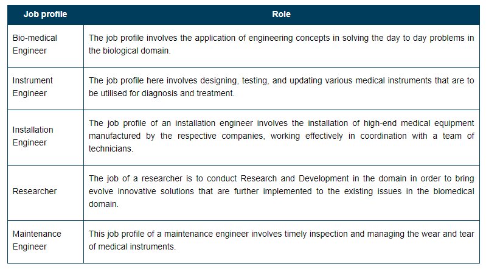

Biomedical engineering (BME)
Biomedical engineering (BME) is the application of engineering principles to solve biological and medical problems for the purpose of improving health care. You may be surprised just how many biomedical technologies you already know. Biomedical engineers created many of today's standard health care instruments.
Biomedical Engineering: Highlights
BTech Biomedical Engineering.
BE Biomedical Engineering.
MS Biomedical Engineering.
MTech in Biomedical Engineering.
Diploma in Biomedical Engineering.
Diploma in Bioinstrumentation.
Diploma in Medical Imaging.
MSc Biomedical Science.
Biomedical Engineering Career, Scope and Job Profiles
